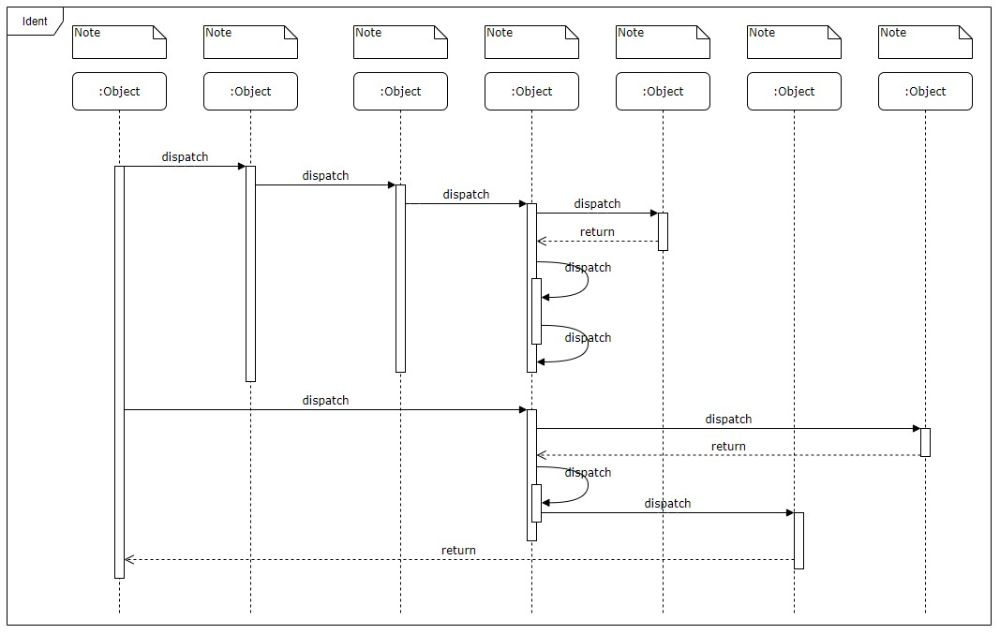
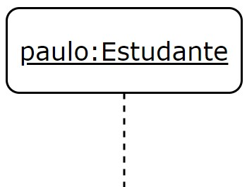
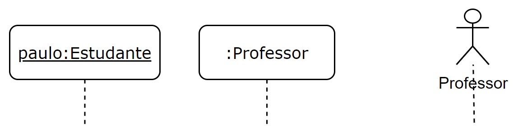
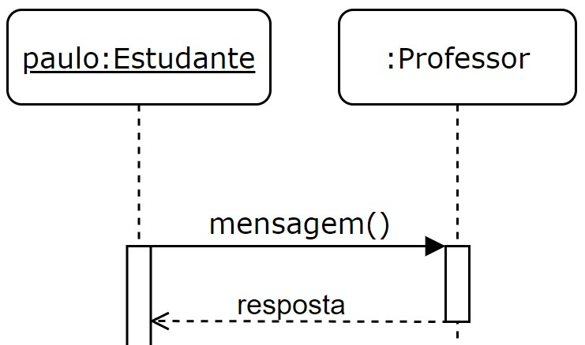
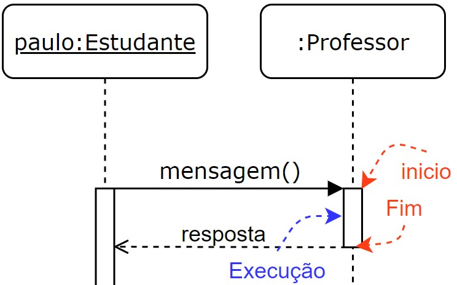
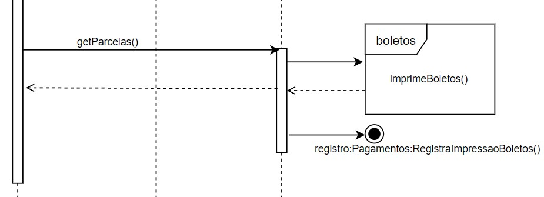
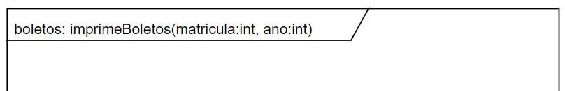
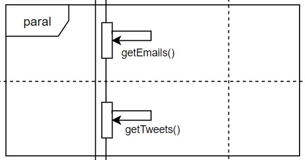
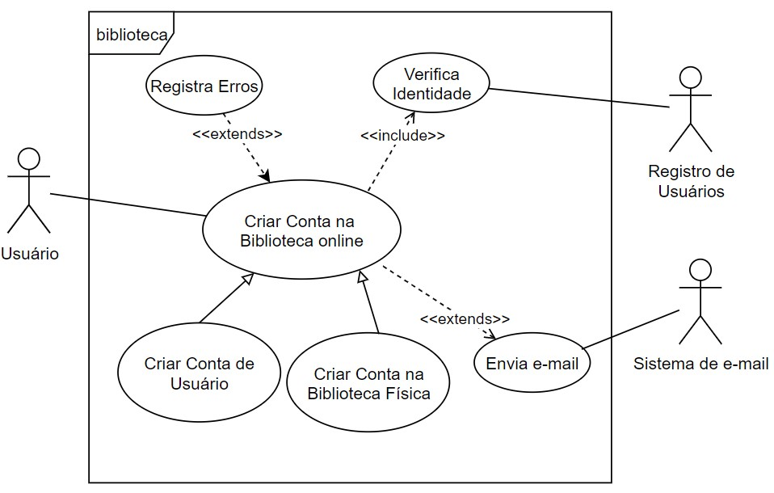

Frank Coelho de Alcantara -2020
Utilizado para indicar, de forma gráfica, as interações entre objetos, na ordem sequencial em que estas interações ocorrem.
Assim como no caso do Diagrama de Classes, os desenvolvedores ignoram o fato que o uso dos Diagramas de Sequencia vai além do desenvolvimento. Analistas de negócio podem utilizar este diagrama para indicar como os objetos de negócio interagem entre si ou para servir de suporte para o levantamento de requisitos de sistemas futuros.
Em todos os diagramas que vimos até o momento, sempre incluímos um frame. Um frame permite limitar uma área do diagrama e ainda nomear esta área de forma semântica, atribuindo ao conjunto de elementos interno um significado específico.
A modelagem é a arte e a ciência de representar um problema na sua forma mais simples. Ainda que exista um conjunto de regras formais para a criação de diagramas, notadamente no que se refere a sintaxe dos diagramas, não é preciso se ater a esta formalidade. Eventualmente, no entanto, o formalismo cria uma estrutura mais simples.
A UML 2.0 sugere que os frames que contenham diagramas inteiros, como o caso do exemplo anterior sejam nomeados seguindo a seguinte estrutura $$tipo\_diagrama:nome\_diagrama$$
No caso, teríamos $sd:ident$ onde $sd$ é a abreviatura aconselhada pela UML 2.0. No entanto, se você observar o uso dos elementos gráficos corretos, a identificação do tipo de diagrama se torna redundante.
Em tradução livre: linhas de vida. As linhas de vida representam a existência funções (roles) ou instância de classes (objects). Por meio de linhas pontilhadas e retângulos. As lifelines são desenhadas a partir de um retângulo, colocado no topo do diagrama e são nomeada segundo a sintaxe: $$nome\_instância:nome\_objeto$$ Do centro deste retângulo sai uma linha pontilhada que cruza o Diagrama de Sequências verticalmente. Na figura temos a representação do objeto paulo, instância da classe Estudante. O sublinhado indica que é um objeto do sistema.
AS lifelines também podem especificar o tempo de vida de uma função (role) sem explicitar um individuo. Isto pode ser feito, usando exatamente a mesma representação, sem o sublinhado. Alguns analistas representam as funções, quando é possível e faz sentido, com o elemento usado para indicar um ator.
Use o elemento ator, apenas para representar a interação com atores, e a sintaxe do Diagrama de Sequência para as classes que representem objetos de negócio e não, necessariamente de sistema.
Fronteiras: representam dispositivos terminais como interface de usuários, ou bancos de dados.
Entidades: representam sistemas externos como um CRM.
Controles: sistemas que controle a relação entre o sistema sendo modelado e os sistemas externos.
Mensagens são as informações trocadas entre as classes instanciadas em um Diagrama de Sequências.
A primeira mensagem da sequência aparece no topo do diagrama, no lado esquerdo. Por que no ocidente escrevemos de cima para baixo e da esquerda para direita. A segunda mensagem estará abaixo desta e assim subsequentemente.
As mensagens serão representadas por setas saíndo de um objeto para outro.
Síncronas: estas mensagens requerem algum tipo de interação (resposta) antes que a sequência possa continuar. Serão desenhadas com linha contínua e seta de ponta fechada e solida.
Assíncronas: não precisam de respostas para que a interação continue. Serão desenhadas com linha contínua e seta de ponta aberta não solida, ou com meia seta.
Retorno: mensagens de retorno, ou resposta, serão desenhadas com linha pontilhada e seta de ponta aberta não solida, apontado para a lifeline original.
Self: mensagens do objeto para ele mesmo, serão desenhadas com linha contínua, seta de ponta aberta não solida, em um formato de U, saíndo do objeto e apontando para ele mesmo.
Criação: mensagens para a criação de objetos, serão desenhadas com linha sólida, seta de ponta aberta não solida, apontando para o objeto a ser criado com a legenda $<<create>>$.
Destruição: mensagens para a destruição de objetos, serão desenhadas com linha sólida, seta de ponta aberta não solida, apontando para um $X$ com a legenda $<<destroy>>$.
Externas: mensagens originadas de objetos fora do diagrama. Quando chegam (found) tem origem em um círculo vazio com um círculo solido no centro e apontam para o destino. Quando saem (lost) tem origem em um objeto e apontam para círculo vazio com um círculo solido no centro
Sem consultar a tela anterior, escreva no seu caderno o que cada seta representa!
Mensagens representam uma funcionalidade (Método) que aquele objeto deve executar. São as chamadas.
O período de tempo necessário para execução de uma tarefa em um objeto, determinada por uma mensagem, será representado por um retângulo vertical.
Uma mensagem pode chegar no topo deste retângulo, criando o objeto, ou a interação, ou durante o tempo de vida deste objeto. Neste último caso, a seta indicando a mensagem pode apontar para qualquer ponto do retângulo de ativação, desde que obedeça a sequência de ocorrência de mensagens.
O uso de mensagens de retorno é opcional nos Diagramas de sequência. Melhora o detalhamento.
Eventualmente um objeto precisa chamar a si mesmo. Isto não é usual mas pode ser usado para destacar um método importante.
Condicionais ou (gards) são usados para expressar a condição de execução para algumas mensagens. São representados entre colchetes e antes da mensagem.
Alternativas são utilizadas para representar opções de processamento. Para isso usamos uma combinação de frames e guards.
Também são representados por uma combinação de frames e guards. Podemos destacar todas as opções possíveis.
Laços são representados da mesma forma, excepto que na parte de cima do frame explicitamos a condição de saída.
Podemos representar um Diagrama de Sequências completo, dentro de um frame, indicado apenas por um método específico que será chamado no diagrama atual.
Assim, é possível que toda a complexidade, já definida, de uma parte do processo, possa ser encapsulada em outro diagrama.
também podemos representar outros diagramas com $nome\_diagrama:nome\_objeto:nome\_método$ usando os símbolos de lost e found.
Uma representação melhor, e muitas vezes necessária, do uso de um Diagrama de Sequência representado por um frame inclui o uso da explicitação de parâmetros na descrição do Diagrama que está sendo embarcado. Podemos fazer esta explicitação na etiqueta de identificação do frame.
Por fim, podemos usar frames, com a etiqueta $paral$ ou $par$ para indicar mensagens que disparam ações que devem ser executadas em paralelo.
Considere o diagrama de casos de uso, mostrado na figura, referente ao fragmento de um sistema de registro de usuários em um sistema de bibliotecas online uma instituição de ensino qualquer. Considere também que você fará o diagrama de sequência apenas para o caso de uso: Criar Conta de Usuário. O caso de uso escolhido será completo após os seguintes passos:
Você pode, e deve, criar os métodos necessários para este processo. Lembre-se você é o analista!
